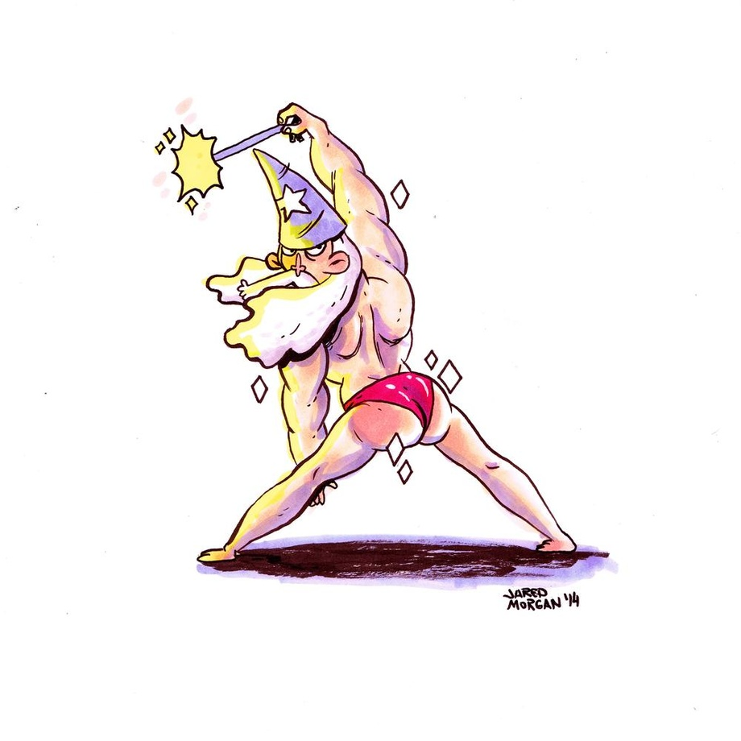

Another mission,
the powers have called me away.
Another time,
to carry the colors again.
My motivation,
an oath I've sworn to defend.
To win the honor
of coming back home again.
No explanation
will matter after we begin.
Unlock the dark destroyer that's buried in me.
My true vocation.
And now my unfortunate friend,
you will discover
a war you're unable to win.
I'll have you know,
that I've become
Indestructible.
Determination that is incorruptible.
From the other side,
a terror to behold.
Annihilation will be unavoidable.
Every broken enemy will know
that their opponent had to be invincible.
Take a last look around while you're alive.
I'm an indestructible master of war.
Another reason,
another cause for me to fight.
Another fuse uncovered
now, for me to light.
My dedication
to all that I've sworn to protect.
I carry out my orders
with not a regret.
A declaration
embedded deep under my skin.
A permanent reminder
of how we began.
No hesitation
when I am commanding the strike.
You need to know
that you're in for the fight of your life.
You will be shown
how I've become
Indestructible.
Determination that is incorruptible.
From the other side,
a terror to behold.
Annihilation will be unavoidable.
Every broken enemy will know
that their opponent had to be invincible.
Take a last look around while you're alive.
I'm an indestructible master of war.
I'm
Indestructible.
Determination that is incorruptible.
From the other side,
a terror to behold.
Annihilation will be unavoidable.
Every broken enemy will know
that their opponent had to be invincible.
Take a last look around while you're alive.
I'm an indestructible master of war.
Indestructible.
Determination that is incorruptible.
From the other side,
a terror to behold.
Annihilation will be unavoidable.
Every broken enemy will know
that their opponent had to be invincible
Take a last look around while you're alive.
I'm an indestructible master of war.
I was born from the flames of a raging fire.
A hundred feet high.
One May morning.
Then I changed to a bird took to the sky.
Flew for ten
thousand miles.
Now I'm going
at the speed
of light.
Straight through the sun.
Now I'm moving beyond all space and time.
I've been alive
for ten thousand years.
Straight.
I'm going
at the speed
of light.
Straight through the sun.
Straight through the sun.